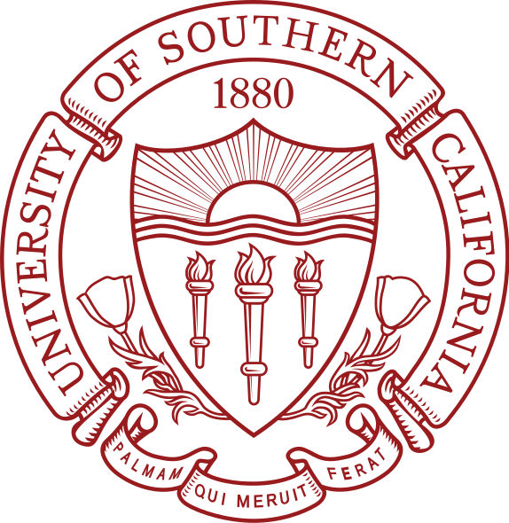

Ayezah Yleine Bagro
612 Hellman Way DMT 305
University of Southern California
Los Angeles, CA. 90089
(626) 545 - 8291

Objective
Compassionate and ambitious Physics and Computer Science freshman at the University of Southern California committed to learn more about the digital world. Eager to share her knowledge and guidance towards young members of society through tutoring elementary and middle school students, and mentoring Guam high school seniors seeking to pursue further education in the mainland United States.
Education
University of Southern California, Los Angeles, California
Bachelor of Science - BS, Physics and Computer Science
Academy of Our Lady of Guam, Hagåtña, Guam
High School Diploma
Experience
Committed Mentor
Horizons
- College Applications Mentor for Guam's high school students hoping to further their education at a post-secondary institution in the mainland United States.
- Assists with building college lists, essay proofreading, and college networking.
SHInE Physician Intern
Guam Regional Medical City
- Shadowed for GRMC's physicians and gained exposure to the health disparity in Guam's medical system.
- Received firsthand experience in observing the ethical decision-making process that physicians faced and in observing their compassion towards others.
Business Intern
Eugenio's Used Cars
- Assists in doing paperwork, advertising, and working with potential customers.
- Worked as soon as school was dismissed at 3:00 pm until 8:00 pm on the weekdays, while Saturdays were entirely devoted to work.
Skills
Leadership
- Participated in the Rotaract Club of the Marianas's Summer Leadership Resiliency Program, a program designed to identify and build upon the participant's existing internal strengths and provide leadership training.
- Served as House and Grounds Chairperson, Senior Class Treasurer, and Green Club Vice President during her years in high school.
Verbal and Written Communication
- Bilingual Proficiency in English.
- Bilingual Proficiency in Tagalog.
Planning Curriculum
- Served as a tutor for students in fourth to eighth grade.
- Currently serves as a mentor for Guam high school seniors who are interested in going off-island for further studies.